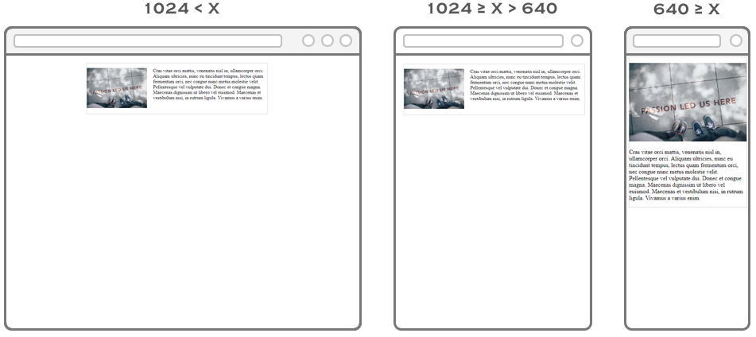

Xin chào các bạn!
Còn MU thì... không gì cả. Những tin đồn về việc họ mua Kingsley Coman, Douglas Costa hay Jack Grealish đều chỉ dừng ở mức tin đồn, và vụ Jadon Sancho đã gần như sập sau khi MU để cho hạn chót mà Dortmund đặt ra trôi qua mà không đáp ứng yêu cầu giá cả. Động thái lớn nhất từ sau khi kết thúc mùa giải của "Quỷ Đỏ" là gia hạn hợp đồng với thủ môn Dean Henderson.
Fan MU tất nhiên đang kiên nhẫn chờ, nhưng đã 1 tháng trôi qua kể từ khi thị trường mở cửa và người ta không thể không hoài nghi về sự tham vọng của đội chủ sân Old Trafford.
Kỳ chuyển nhượng có 10 tuần thì đã 4 tuần qua họ không làm được gì ngoài bị từ chối vụ Sancho, trong khi đó các đối thủ mua sắm nếu không rầm rộ thì cũng bổ sung toàn những vị trí quan trọng.
- Phần tử 1
- Phần tử 2
- Phần tử 3
- Phần tử 4
- Menu 1
- Menu 2
- Menu 3
- Menu 4
24h.com
liên kết Index 2
liên kết Index 3
